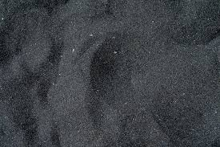
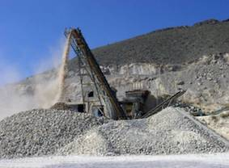

Productos de Áridos Los Quillalles
Arena Fina
La arena fina es ideal para mezclas de concreto, filtración de agua y pavimentación. También es perfecta para jardinería y otros usos decorativos.
- Mezclas de concreto
- Filtración de agua
- Pavimentación
- Jardinería
Arena Gruesa

La arena gruesa es ideal para la construcción de cimientos, pavimentos y otros proyectos de construcción que requieren una mayor resistencia.
- Construcción de cimientos
- Mezclas de concreto
- Pavimentos
Relleno

Utilizado para nivelación de terrenos y estabilización de suelos, este producto es perfecto para obras de infraestructura y construcción.
- Nivelación de terrenos
- Estabilización de suelos
- Base para pavimentos y carreteras
Escarpe

Perfecto para el relleno de caminos y la base de cimentación, el escarpe es un material versátil para diferentes proyectos de construcción.
- Relleno de camino
- Base de cimientos
- Emparejamiento de caminos
Estabilizado Natural

Este material es ideal para obras de bajo impacto, pavimentos temporales y áreas con poco tráfico.
- Obras de bajo impacto
- Base para áreas con poco tráfico
- Pavimentos temporales
Base Estabilizada
La base estabilizada se usa en la construcción de carreteras, pavimentos y estructuras de soporte pesado.
- Construcción de carreteras
- Pavimentos
- Estructuras de soporte pesado
Grava

Utilizada en mezclas de concreto de alta resistencia y en la construcción de infraestructuras, la grava es esencial para grandes proyectos.
- Mezclas de concreto de alta resistencia
- Construcción de infraestructuras
- Fundaciones de grandes estructuras
Gravilla

Ideal para la construcción de caminos y drenaje de aguas pluviales, la gravilla es un material versátil y accesible.
- Construcción de caminos
- Drenaje de aguas pluviales
- Proyectos de infraestructura liviana